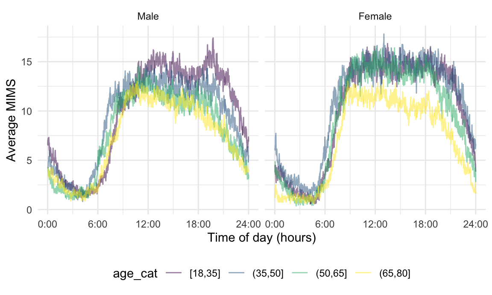
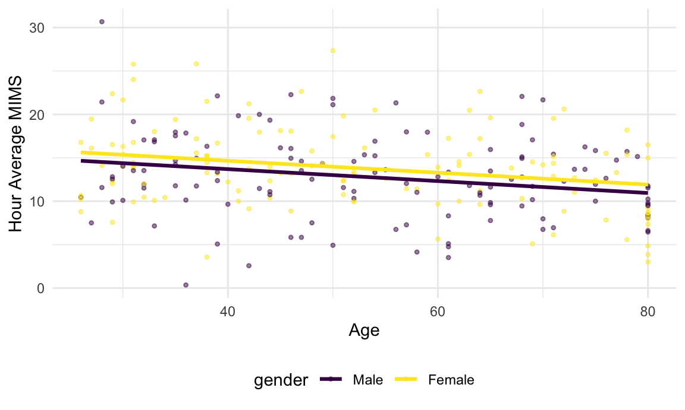
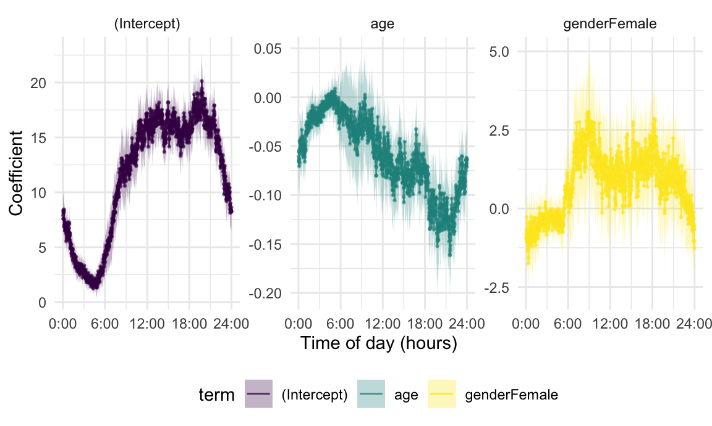
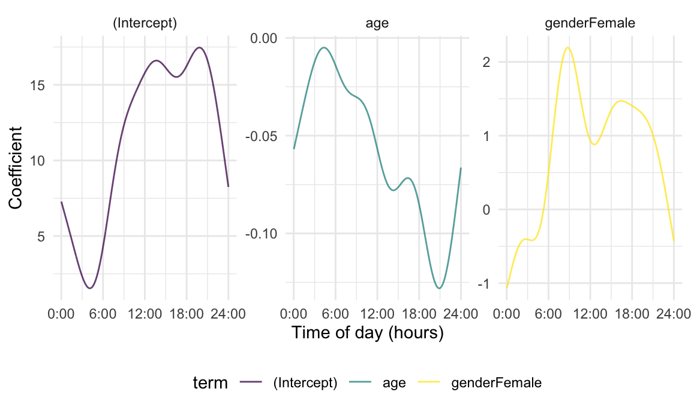

Chapter 5: FoSR
We now consider the use of functions as responses in models with scalar predictors. This setting is widespread in applications of functional data analysis, and builds on specific tools and broader intuition developed in previous chapters. We will focus on the linear Function-on-Scalar Regression (FoSR) model, with a brief overview of alternative approaches in later sections.
Motivation and Exploratory Analysis of MIMS Profiles
The code below imports and organizes data that will be used in this
Chapter. As elsewhere, we begin with the processed NHANES data. The
MIMS variable is converted to a tidyfun object
and stored as a single column of functional observations; we retain a
small number of scalar covariates (gender and
age, as well as the participant ID in SEQN
which we convert to a factor variable) and create a categorical age
variable. Subjects who are missing covariate information are dropped. To
keep the examples in this section computationally feasible, we use the
first 250 subjects in this dataset.
# import and organize the data
nhanes_df =
readRDS(
here::here("data", "nhanes_fda_with_r.rds")) %>%
select(SEQN, gender, age, MIMS_mat = MIMS) %>%
mutate(
age_cat =
cut(age, breaks = c(18, 35, 50, 65, 80),
include.lowest = TRUE)) %>%
drop_na(age, age_cat) %>%
filter(age >= 25) %>%
tibble() %>%
slice(1:250) nhanes_df =
nhanes_df %>%
mutate(
MIMS_tf = matrix(MIMS_mat, ncol = 1440),
MIMS_tf = tfd(MIMS_tf, arg = seq(1/60, 24, length = 1440)))Physical activity trajectories observed over 24 hours are shaped by subject-level characteristics, and better understanding of the drivers of activity may provide useful insights into health behaviors or potential interventions that promote physical activity. One way to explore these complex associations is to consider the MIMS profile as a response that varies according to scalar predictors like age and gender. The Figure below is similar to one shown in the Introduction, and shows minute-level averages for participants in each age category separately for male and female. From this, we observe a clear diurnal pattern of activity, and note a decrease in physical activity in the afternoon and evening as age increases this is particularly noticeable for male participants. We also see that female participants generally have a higher mean activity than male participants in the same age category.
# exploratory data analysis and plot
nhanes_df %>%
group_by(age_cat, gender) %>%
summarize(mean_mims = mean(MIMS_tf)) %>%
ggplot(aes(y = mean_mims, color = age_cat)) +
geom_spaghetti() +
facet_grid(.~gender) +
scale_x_continuous(breaks = seq(0, 24, length = 5)) +
labs(x = "Time of day (hours)", y = "Average MIMS")
## `summarise()` has grouped output by 'age_cat'. You can override using the
## `.groups` argument.
## `summarise()` has grouped output by 'age_cat'. You can override using the
## `.groups` argument.Exploratory plots like this one are useful for beginning to understand the effects of covariates on physical activity, but are limited in their scope. We are unable, from this Figure, to adjust for covariates or understand issues like confounding, and there is no direct mechanism to assess statistical significance or make inferences. Although the means in adjacent minutes are similar due to the underlying structure of the observations, simple minute-level averages do not explicitly leverage that structure. These are some of the issues that more formal approaches to function-on-scalar regression are intended to address.
Regressions using Binned Data
To build intuition for functional response model interpretations, identify practical challenges, and motivate later developments, we fit a series of regressions to MIMS profiles using binned or aggregate observations. As a first step, we aggregate minute-level data into hour-length bins, so that each MIMS profile consists as 24 observations. To obtain hourly trajectories, we “smooth” minute-level data using a rolling mean with a 60-minute bandwidth, and evaluate the resulting functions at the midpoint of each hour.
#Construct a variable that contains average MIMS for each hour
nhanes_df =
nhanes_df %>%
mutate(
MIMS_hour =
tf_smooth(MIMS_tf, method = "rollmean", k = 60, align = "center"),
MIMS_hour = tfd(MIMS_hour, arg = seq(.5, 23.5, by = 1)))
## setting fill = 'extend' for start/end values.
## Warning: There was 1 warning in `mutate()`.
## ℹ In argument: `MIMS_hour = tf_smooth(MIMS_tf, method = "rollmean", k = 60,
## align = "center")`.
## Caused by warning in `tf_smooth.tfd()`:
## ! non-equidistant arg-values in 'MIMS_tf' ignored by rollmean.The resulting MIMS_hour data are shown for a subset of
participants in the Figure below. As before, we are interested in the
effects of age, now treated as a continuous variable, and
gender. The binning process retains a level of granularity
that is informative regarding diurnal patterns of activation but
reflects a substantial reduction in the dimension and detail in the
data.
#Plot subject-specific MIMS average within each hour
nhanes_df %>%
ggplot(aes(y = MIMS_hour, color = age)) +
geom_spaghetti(alpha = .2) +
geom_meatballs(alpha = .2) +
facet_grid(.~gender)These data can be analyzed using hour-specific linear models that
regress bin-average MIMS values on age and
gender. This collection of linear models does not account
for the temporal structure of the diurnal profiles except through the
binning that aggregates data to an hour level, but taken together will
illustrate the association between the outcome and predictors over the
course of the day.
As a first example, we’ll fit a standard linear model for with the average MIMS value between 1:00 and 2:00pm as a response. To do this, we unnest the hour-level functional observations and subset to the interval of current interest. These data are shown as a scatterplot below, with the fit from a linear model overlaid.
#Fit a linear model for average MIMS between 1.00 and 2.00pm
linear_fit =
nhanes_df %>%
select(SEQN, age, gender, MIMS_hour) %>%
tf_unnest(MIMS_hour) %>%
filter(MIMS_hour_arg == 13.5) %>%
lm(MIMS_hour_value ~ age + gender, data = .)Make a table of results.
Make a plot of results

The scatterplot and regression results are consistent with our previous observations: the binned-average MIMS values decrease with age, and female participants may have somewhat higher values than male participants. The benefit of this analysis over visualization-based exploratory techniques is that it provides a formal statistical assessment of these effects and their significance.
Associations between binned-average MIMS values and age
and gender will vary by hour, and the next step in our
exploratory analysis is to fit separate regressions at each hour
separately. We accomplish this using data nested within hour. First,
we’ll unnest the subject-specific functional observation and then
re-nest within hour; the result is a dataframe containing 24 rows, one
for each hour, with a column that contains a list of hour-specific
dataframes containing the MIMS_hour_value,
age, and gender. By mapping over the entries
in this list, we can fit hour-specific linear models and extract tidied
results. The code chunk below implements this analysis.
#Fit a linear model for average MIMS at each hour of the day
hourly_regressions =
nhanes_df %>%
select(SEQN, age, gender, MIMS_hour) %>%
tf_unnest(MIMS_hour) %>%
rename(hour = MIMS_hour_arg, MIMS = MIMS_hour_value) %>%
nest(data = -hour) %>%
mutate(
model = map(.x = data, ~lm(MIMS ~ age + gender, data = .x)),
result = map(model, broom::tidy)
) %>%
select(hour, result)Before visualizing the results, we do some data processing to obtain
hourly confidence intervals and then structure coefficient estimates and
confidence bands as tf objects. The result is a three-row
dataframe, with rows for the intercept, age, and gender effects; columns
include the term name as well as the coefficient estimates and the upper
and lower limits of the confidence bands.
#Obtain confidence intervals and organize regression results
hour_bin_coefs =
hourly_regressions %>%
unnest(cols = result) %>%
rename(coef = estimate, se = std.error) %>%
mutate(
ub = coef + 1.96 * se,
lb = coef - 1.96 * se
) %>%
select(hour, term, coef, ub, lb) %>%
tf_nest(coef:lb, .id = term, .arg = hour)We show the analysis results using ggplot and
tidyfun functions. Because the coefficient estimates in
coef are tf objects, we can plot these using
geom_spaghetti; to emphasize the estimates at each hour, we
add points using geom_meatballs. Confidence bands are shown
by specifying the upper and lower limits, and we facet by term to see
each coefficient separately.
# plot coefficients and CIs
hour_bin_coefs %>%
ggplot(aes(y = coef, color = term)) +
geom_spaghetti() +
geom_meatballs() +
geom_errorband(aes(ymax = ub, ymin = lb, fill = term)) +
facet_wrap("term", scales = "free")
Compared to the regression at a single time point, these results provide detailed temporal information about covariate effects. The intercept shows a fairly typical diurnal pattern, with low activity in the night and higher activity in the day. After adjusting for age, women are somewhat less active in the middle of the night but more active during the daytime hours. Meanwhile, after adjusting for gender, older participants are generally less active at all times. The associated confidence bands suggest that not all of these effects are significant – there may not be a significant effect of age in the early morning, for example – but at many times of day there do seem to be significant effects of age and gender on the binned-average MIMS values. Finally, we note that the confidence bands are narrowest in the nighttime hours and widest during the day, which is consistent with the time-varying distribution of the outcome shown in earlier Figures.
The hour-level analysis is an informative exploratory approach, but has several limitations. Most obviously, it aggregates data within prespecified bins, and in doing so loses some of the richness of the underlying data. That aggregation induces some smoothness by relying on the underlying temporal structure, but this smoothness is implicit and dependent on the bins that are chosen – adjacent coefficient estimates are similar only because the underlying data are similar, and not because of any specific model element. To emphasize these points, we can repeat the bin-level analysis using 10-minute and one-minute epochs. These can be implemented using only slight modifications to the previous code, in particular by changing in the bin width of the rolling average and the grid of argument values over which functions are observed. We therefore omit this code and focus on the results produced in these settings.
## setting fill = 'extend' for start/end values.
## Warning: There was 1 warning in `mutate()`.
## ℹ In argument: `MIMS_ten = tf_smooth(MIMS_tf, method = "rollmean", k = 10,
## align = "center")`.
## Caused by warning in `tf_smooth.tfd()`:
## ! non-equidistant arg-values in 'MIMS_tf' ignored by rollmean.Results for pointwise regression analyses using 10-minute epochs are below.
Results for one-minute epochs are in the next figure.
In each of these analyses, the qualitative results and their interpretations are similar – the intercept suggests a usual circadian rhythm, and the age indicates that activity generally decreases with increasing age, and the gender effect shows that female participants were more active than male participants. But this also shows some difficulties inherent in binning-based analyses. These do not leverage the temporal structure directly in the estimation process. A correct approach to inference is not obvious, both because of the need for some degree of smoothness across time and also because within-subject residuals will have a temporal correlation structure. A more subtly issue is that we implicitly rely on curves being observed over the same grid, or at least that a rolling mean is a plausible way to generate binned averages, and this approach may not work when data are sparse or irregular across subjects.
Solutions to these problems are the goal of various approaches to function-on-scalar regression, which seeks to explicitly model coefficients in a way that induces smoothness; in some way accounts for within-curve correlation; and extends to a variety of data generating scenarios.
Linear Function-on-Scalar Regression
Let \(y_i:\mathcal{S}\rightarrow \mathbb{R}\) be a functional response of interest for each study participant, \(i=1,\ldots,n\), and \(x_{i1}\) and \(x_{i2}\) be two scalar predictors. In the setting considered in this Chapter, the functional response is the MIMS profile for each participant, and the scalar predictors of interest are age in years and a variable indicating whether participant \(i\) is male (\(x_{i2} = 0\)) or female (\(x_{i2} = 1\)). The linear function-on-scalar regression for this setting is \[E[Y_i(s)] = \beta_0(s) + \beta_1(s) x_{i1} + \beta_2(s) x_{i2}\] with coefficients \(\beta_p:\mathcal{S}\rightarrow \mathbb{R}\), \(p \in \{0, 1, 2\}\) that are functions measured over the same domain as the response. Scalar covariates in this model can exhibit the same degree of complexity as in non-functional regressions, allowing any number of continuous and categorical predictors of interest.
Coefficient functions encode the varying association between the response and predictors, and are interpretable in ways that parallel non-functional regression models. In particular, \(\beta_0(s)\) is the expected response for \(x_{i1} = x_{i2} = 0\); \(\beta_1(s)\) is the expected change in the response for each one unit change in \(x_{i1}\) while holding \(x_{i2}\) constant; and so on. These are often interpreted at specific values of \(s \in \mathcal{S}\) to gain intuition for the associations of interest. In the NHANES data considered so far, for example, coefficients functions can be used to compare the effect of increasing age in the morning and evening, keeping gender fixed. Residuals in this model will contain deviations between the observed responses and the expected values based on the linear predictor. These can be complex and their impact on estimation and inference will be discussed in SUBSECTION.
The linear FoSR model addresses the concerns our exploratory analysis raised. Because coefficients are functions observed on \(\mathcal{S}\), they can be estimated using techniques that explicitly allow for smoothness across the functional domain. This smoothness, along with appropriate error correlation structures, provides an avenue for correct statistical inference. Considering coefficients as functions also opens the door to data generating mechanisms for observed data that would be challenging or impossible in more exploratory settings, such as responses that are observed on grids that are sparse or irregular across subjects.
Estimation of Fixed Effects
Functional responses are observed over a discrete grid \(\mathbf{s} = \{s_1, ..., s_J\}\) which, for now, we will assume to be common across subjects so that for subject \(i\) the observed data vector is \(\mathbf{y}_i^{T} = [y_i(s_1), ..., y_i(s_J)]\). From the FoSR model ZZZZ, we have \[E[\mathbf{y}_i^{T}] = \mathbf{x}_i \begin{bmatrix} \beta_{0}(s_1) & ... & \beta_{0}(s_J)\\ \beta_{1}(s_1) & ... & \beta_{2}(s_J)\\ \beta_{2}(s_1) & ... & \beta_{3}(s_J) \end{bmatrix} \] where \(\mathbf{x}_i = [1, x_{i1}, x_{i2}]\) is the row vector containing scalar terms that defines the regression model. This expression is useful because it connects a \(1 \times J\) response vector to a recognizable row in a standard regression design matrix and the matrix of functional coefficients.
Estimation of coefficients will rely on approaches that have been used elsewhere with nuances specific to the FoSR setting. As a starting point, we will expand each \(\beta_p(s) = \sum_{k=1}^K\beta_{pk} B_k(s)\) using the basis \(B_1(s),\ldots,B_K(s)\). While many choices are possible, we will use a spline expansion. Using this, the \(3 \times J\) matrix of coefficient functions in ZZZZ can be expressed using \[ \begin{bmatrix} \beta_{11} & \beta_{21} & \beta_{31}\\ \vdots & \vdots & \vdots \\ \beta_{1K} & \beta_{2K} & \beta_{3K} \end{bmatrix} \begin{bmatrix} \boldsymbol{B}_{1}(s_1) & ... & \boldsymbol{B}_{K}(s_1)\\ \vdots & & \vdots \\ \boldsymbol{B}_{1}(s_J) & ... & \boldsymbol{B}_{K}(s_J) \end{bmatrix}. \]
Conveniently, one can concisely combine and rewrite the previous expressions. Let \(\boldsymbol{B}(s_{j}) = [B_1(s_{j}), \ldots, B_K(s_{j})]\) be the \(1 \times K\) row vector containing the basis functions evaluated at \(s_{j}\) and \(\boldsymbol{B}(\mathbf{s})\) be the \(K \times J\) matrix containing basis functions evaluated over the grid \(\mathbf{s}\). Further, let \(\mathbf{\beta}_{p} = [\beta_{p1}, \ldots, \beta_{pK}]^{T}\) be the \(K \times 1\) vector of basis coefficients for function \(p\) and \(\boldsymbol{\beta} = [\mathbf{\beta}^{T}_{0}, \mathbf{\beta}^{T}_{1}, \mathbf{\beta}^{T}_{2}]^{T}\) be the \((3 \cdot K) \times 1\) vector constructed by stacking the vectors of basis coefficients. For the \(J \times 1\) response vector \(\mathbf{y}_i\), we have \[ E[\mathbf{y}_i] = [\mathbf{x}_i \otimes \boldsymbol{B}(\mathbf{s})] \boldsymbol{\beta} \] where \(\otimes\) is the Kronecker product.
This expression for a single subject can be directly extended to all subjects. Let \(\mathbf{y}\) be the \((n \cdot J) \times 1\) vector created by stacking the vectors \(\mathbf{y}_i\) and \(\boldsymbol{X}\) be \(n \times 3\) matrix created by stacking the vectors \(\mathbf{x}_i\). Then \[ E[\mathbf{y}] = [\boldsymbol{X} \otimes \boldsymbol{B}(\mathbf{s})] \boldsymbol{\beta}. \] This formulation, while somewhat confusing at first, underlies many implementations of the linear FoSR model. First, we note that the matrix \(\boldsymbol{X}\) is the design matrix familiar from non-functional regression models, and includes a row for each subject and a column for each predictor. The Kronecker product with the basis \(\boldsymbol{B}(\mathbf{s})\) replicates that basis once for each coefficient function; this product also ensures that each coefficient function, evaluated over \(\mathbf{s}\), is multiplied by the subject-specific covariate vector \(\mathbf{x}_i\). Finally, considering \([\boldsymbol{B}(\mathbf{s}) \otimes \boldsymbol{X}]\) as the full FoSR design matrix and \(\boldsymbol{\beta}\) as a vector of coefficients to be estimated explicitly connects the FoSR model to standard regression techniques.
Estimation using ordinary least squares
Estimation the spline coefficients, and therefore the coefficient
functions, using ZZZ helps to build intuition for the inner workings of
more complex estimation strategies. We will regress the daily MIMS data
on age and gender to illustrate this approach. Recall that
nhanes_df stores MIMS as a tf
vector; some of the code below relies on extracting information from a
tf object.
For this model, the code chunk below defines the standard design
matrix \(\boldsymbol{X}\) and the
response vector \(\mathbf{y}\). The
call to model.matrix() uses a formula that correctly
specifies the predictors, and obtaining the response vector
y unnests the tf vector and then extracts the
observed responses for each subject.
X_des =
model.matrix(
SEQN ~ gender + age,
data = nhanes_df
)
y =
nhanes_df %>%
tf_unnest(MIMS_tf) %>%
pull(MIMS_tf_value)The next code chunk constructs the spline basis matrix \(\boldsymbol{B}(\mathbf{s})\) and the
Kronecker product \([\boldsymbol{B}(\mathbf{s}) \otimes
\boldsymbol{X}]\). The spline basis is evaluated over the grid
\(\mathbf{s}\) pulled from
MIMS, and uses \(K = 30\)
basis functions.
epoch_arg = seq(1/60, 24, length = 1440)
basis =
splines::bs(epoch_arg, df = 30, intercept = TRUE)
X_kron_B = kronecker(X_des, basis)Using these, the direct application of usual formulas provides OLS
estimates of the spline coefficients. Reconstructing coefficient
functions is possible using ZZZ above, and the results can be converted
to a tf vector for plotting and manipulation. The code
chunk below estimates and plots coefficient functions.
spline_coefs = solve(t(X_kron_B) %*% X_kron_B) %*% t(X_kron_B) %*% y
OLS_coef_df =
tibble(
method = "OLS",
term = colnames(X_des),
coef =
tfd(
t(basis %*% matrix(spline_coefs, nrow = 30)),
arg = epoch_arg)
)
OLS_coef_df %>%
ggplot(aes(y = coef, color = term)) +
geom_spaghetti(size = 1.1, alpha = .75) +
facet_wrap("term", scales = "free")
## Warning in geom_spaghetti(size = 1.1, alpha = 0.75): Ignoring unknown
## parameters: `size`
## Warning in geom_spaghetti(size = 1.1, alpha = 0.75): Ignoring unknown
## parameters: `size`
Comparing these results to those obtained from epoch-specific regressions begins to indicate the benefits of a functional perspective. Coefficient functions have a smoothness determined by the underlying spline expansion, and estimates directly information borrow across adjacent time points. Our specification relied on the same observation grid, but this can be relaxed: if data contain subject-specific grids \(\mathbf{s}_i\), one can replace the matrix \([\boldsymbol{B}(\mathbf{s}) \otimes \boldsymbol{X}]\) with one constructed by row-stacking matrices \([\mathbf{x}_i \otimes \boldsymbol{B}(\mathbf{s}_i)]\) (note that it can take some care to ensure the basis is constant across subjects, for example by explicitly defining knot points). We will next incorporate smoothness penalties and account for complex error correlations, but it is helpful to view these as variations on a familiar regression framework.
Estimation using smoothness penalties
Spline expansions for coefficient functions in the linear FoSR model makes the functional nature of the observed data and the model parameters explicit, and distinguishes this approach from multivariate or epoch-based alternatives. However, as we’ve seen elsewhere, using a spline expansion introduces questions about how best to balance flexibility with goodness-of-fit. While one could address this through a careful selection of the number of basis functions \(K\), it is more common to use a large value for \(K\) and introduce smoothness-enforcing penalties to prevent overfitting.
Solutions obtained in Section ZZZZ using OLS also arise using maximum likelihood estimation. Assume that residuals \(\mathbf{\epsilon}_i^{T} = [\epsilon_i(s_1), ..., \epsilon_i(s_J)]\) observed on \(\mathbf{s}\) are \(\mathrm{iid}\) are drawn from a mean-zero normal distribution with variance \(\sigma^{2}_{\epsilon}\) that is constant over time points \(\mathbf{s}\) and subjects \(i\). Maximizing the (log) likelihood \(\mathcal{L}(\boldsymbol{\beta}; \mathbf{y})\) induced by this assumption with respect to spline coefficients is equivalent to the OLS approach. We can add penalties \(P\left[\beta_{p}(s) \right]\) to enforce smoothness in estimates of coefficient functions; a common choice is the second derivative penalty \(\int_{\mathcal{S}} \left[\beta_{p}^{''}(s) \right]^2 ds\). The second derivative penalty and many others can be expressed in terms of the corresponding coefficient vector, resulting in the penalized likelihood \[ \mathcal{L}(\boldsymbol{\beta}; \mathbf{y}) + \sum_{p} \lambda_{p} P\left[\mathbf{\beta}_{p} \right]\] where tuning parameters \(\lambda_{p}\) control the balance between goodness-of-fit and complexity of the coefficient functions \(\beta_{p}(s)\).
Here we are emphasizing a penalized likelihood approach, rather than using the penalized residual sum of squares, even though both are possible for the setting we currently consider. Focusing on the penalized likelihood makes the extension to non-continuous response functions (e.g. binary rest-active trajectories instead of MIMS profiles) relatively direct by changing the assumed outcome distribution, and will similarly facilitate modeling and including error correlation structures. More subtly, it is possible to view the likelihood-based framework as a variation on mixed-model approaches to penalized spline smooth smoothing introduced in Chapter 2.2.3, a connection that underlies several implementations of the FoSR model.
We will use the gam function in the well-developed
mgcv package to fit the FoSR model with smoothness
penalties. First, we explicitly create the binary indicator variable for
gender, and organize data into “long” format by unnesting
the MIMS data stored as a tf object. The resulting
dataframe has a row for each subject and epoch, containing the
MIMS outcome in that epoch as well as the scalar covariates
of interest. This is analogous to the creation of the response vector
for model fitting using OLS, and begins to organize covariates for
inclusion in a design matrix.
nhanes_for_gam =
nhanes_df %>%
mutate(gender = as.numeric(gender == "Female")) %>%
tf_unnest(MIMS_tf) %>%
rename(epoch = MIMS_tf_arg, MIMS = MIMS_tf_value)With data in this form, we can fit the FoSR model using
mgcv::gam() as follows.
gam_fit =
gam(MIMS ~ s(epoch) + s(epoch, by = gender) + s(epoch, by = age),
data = nhanes_for_gam)Conceptually, this specification indicates that each observed
MIMS value is the combination of three smooth functions of
epoch: an intercept function, and the products of
coefficient functions and scalar covariates gender and
age. Specifically, the first model term
s(epoch) indicates the evaluation of a spline expansion
over values contained in the epoch column of the data frame
nhanes_for_gam. The second and third terms add
by = gender and by = age, respectively, which
also indicate spline expansions over the epoch column but
multiply the result by the corresponding scalar covariates. This process
is analogous to the creation of the design matrix \([\boldsymbol{B}(\mathbf{s}) \otimes
\boldsymbol{X}]\), although gam()’s function
s() allows users to flexibly specify additional options for
each basis expansion.
In contrast the the previous Section’s parameter estimation using
OLS, smoothness is induced in parameter estimates through explicit
penalization. By default, gam() uses thin-plate splines
with second derivative penalties, and selects tuning parameters for each
coefficient using GCV or REML [cite “thin plate regression
splines”].
The results contained in gam_fit are not directly
comparable to those we’ve seen elsewhere, and extracting coefficient
functions requires some additional work. The predict.gam()
function can be used to return each element of the linear predictor for
a provided data frame. In this case, we hope to return smooth functions
of epoch corresponding to the intercept and coefficient
functions. We therefore create a data frame containing an
epoch column consisting of the unique evaluation points of
the observed functions (i.e. minutes); a column gender, set
to 1 for all epochs; and a column age, also
set to 1 for all epochs.
gam_pred_obj =
tibble(
epoch = epoch_arg,
gender = 1,
age = 1,
) %>%
predict(gam_fit, newdata = ., type = "terms")The result contained in gam_pred_obj is a
1440 x 3 matrix, with columns corresponding to \(\beta_0(\mathbf{s})\), \(1 \cdot \beta_1(\mathbf{s})\), and \(1 \cdot \beta_2(\mathbf{s})\). We convert
these to tfd objects in the code below. Note that
gam() includes the overall intercept as a (scalar) fixed
effect, which must be added to the intercept function. With data
structured in this way, we can then plot coefficient functions using
tools seen previously.
gam_coef_df =
tibble(
method = "GAM",
term = c("(Intercept)", "genderFemale", "age"),
coef =
tfd(t(gam_pred_obj), arg = epoch_arg)) %>%
mutate(coef = coef + c(coef(gam_fit)[1], 0, 0))gam_coef_df %>%
ggplot(aes(y = coef, color = term)) +
geom_spaghetti(size = 1.1, alpha = .75) +
facet_wrap(vars(term), scales = "free")
## Warning in geom_spaghetti(size = 1.1, alpha = 0.75): Ignoring unknown
## parameters: `size`## Warning in geom_spaghetti(size = 1.1, alpha = 0.75): Ignoring unknown
## parameters: `size`The plot below includes estimates obtained from the three approaches
seen so far, and facilitates a comparison of methods. Each approach –
separate epoch-level regressions, FoSR using OLS to estimate spline
coefficients, and FoSR implemented with smoothness penalties in
mgcv::gam() – yields qualitatively similar results
regarding the effect of age and gender on diurnal MIMS trajectories.
This suggests that all approaches can be used at least in exploratory
analyses or to understand general patterns. That said, there are obvious
differences. The epoch-level regressions do not borrow information
across adjacent time points, and the OLS is sensitive to dimension of
the basis expansion in the model specification; both are wigglier, and
perhaps less plausible, than the method that includes smoothness
penalties. As a result, methods that explicitly borrow information
across time and implement smoothness penalties with data-driven tuning
parameters are often preferred for formal analyses.
ggp_coefplot_compare =
ggplot(mapping = aes(y = coef, color = method)) +
geom_spaghetti(data = min_regressions, alpha = .5) +
geom_spaghetti(data = OLS_coef_df, size = 1.2) +
geom_spaghetti(data = gam_coef_df, size = 1.2) +
facet_wrap(vars(term), scales = "free") +
scale_x_continuous(
breaks = seq(0, 24, length = 5),
labels = str_c(seq(0, 24, length = 5), ":00")) +
labs(x = "Time of day (hours)", y = "Coefficient")
## Warning in geom_spaghetti(data = OLS_coef_df, size = 1.2): Ignoring unknown
## parameters: `size`
## Warning in geom_spaghetti(data = gam_coef_df, size = 1.2): Ignoring unknown
## parameters: `size`
ggp_coefplot_compare
ggsave(
here::here("figures", "ch05_fosr", "coefplot_compare.pdf"),
plot = ggp_coefplot_compare,
width = 8, height = 4.5)Error correlation and inference
To this point, we have developed tools for estimating coefficient functions in model ZZZ while setting aside concerns about residual correlation. Of course, in most FoSR settings residuals are indeed correlated; in our example, MIMS values at 10:00am are informative for values at 1:00pm.
Connecting FoSR with techniques for FPCA presented in Chapter 3 is an important approach to modeling residual correlation. In FPCA, the goal is to separate (mean-zero) functions \(w_i(s)\) into \(f_i(s)\) and \(epsilon_{i}(s)\) under the assumption that the \(f_{i}(s)\) can be decomposed using a low dimensional orthonormal basis. Chapter 3 often assumed a population-level mean shared across subjects; here, we will model the conditional mean using subject-level covariates and decompose residual variation using FPCA. That is, in our example with two scalar covariates \(x_{i1}\) and \(x_{i2}\) we will model \[Y_i(s) = \beta_0(s) + \beta_1(s) x_{i1} + \beta_2(s) x_{i2} + f_i(s) +\epsilon_i(s)\] using techniques based in FPCA to model the functions \(f_i(s)\).
Appropriately accounting for residual correlation affects both estimation and inference for coefficient function \(\beta_{p}(s)\). In Section ZZZZ, we’ll use visual inspection of estimated coefficient functions and their confidence bands to build intuition for the impact of various approaches to modeling residual correlation. Our approach to constructing pointwise confidence intervals is rests on spline-based estimation approaches considered so far, as well as the assumption that spline coefficient estimates have an approximately Normal distribution. Treating any tuning parameters as fixed, for any \(s \in \mathcal{S}\) the variance of \(\hat{\beta}_p(s)\) is given by \[\mbox{Var}[\hat{\beta}_p(s)] = \boldsymbol{B}(s) \mbox{Var}(\mathbf{\beta}_{p}) \boldsymbol{B}(s)^{T} \] From this, one can obtain standard errors and construct a confidence interval for \(\beta_p(s)\) using the assumption of Normality.
In keeping with the philosophy of this book, models in this section will be fit with user-friendly functions that mask a some degree of underlying complexity. However, we emphasize that these model fitting strategies are grounded in familiar regression techniques: coefficient functions are estimated using penalized splines, and the conceptual framework for modeling residual correlation is based on FPCA and related to similar structures in longitudinal data analysis.
Modeling residuals with FPCA and gam
Combining FoSR with FPCA for correlated residuals suggests the following model structure: \[Y_i(s) = \beta_0(s) + \beta_1(s) x_{i1} + \beta_2(s) x_{i2} + \sum_{k = 1}^{K} \xi_{ik}\phi_k(s) + \epsilon_{i}(s)\] \[\xi_{ik} \sim [0, \lambda_k]; \epsilon_i(s) \sim N[0, \sigma^2].\] As before, functions are observed over discrete values \(\mathbf{s}_i = \{s_1, ..., s_{J_i}\}\) that can be dense or sparse, regular or irregular, and shared across subjects or not.
Our approach to estimating coefficient functions \(\beta_0(s)\) will remain essentially unchanged from previous sections. The challenge now is how best to estimate terms in the sum \(\sum_{k = 1}^{K} \xi_{ik}\phi_k(s)\), keeping in mind that both subject level scores \(\xi_{ik}\) and shared directions of variation \(\phi_k(s)\) are unknown. A key observation in Chapter 3 is that if the \(\phi_k(s)\) are known or if estimates \(\hat{\phi}_k(s)\) are available, then scores can be estimated as random effects in a mixed model. Our approach to fitting model ZZZ will be to obtain estimates of the \(\phi_k(s)\), so that coefficient functions \(\beta_{p}(s)\) and scores \(\xi_{ik}\) can be simultaneously estimated using penalized splines and random effects, respectively. Although it is not strictly necessary to fit and interpret the results of a FoSR model, recognizing that mixed models underlie the penalized spline estimation for coefficient functions as well as the random effects estimation for scores connects these two model components and facilitates implementation.
First, we will assume that \(K = 1\) and \(\phi_{1}(s) = 1\) for all \(s \in \mathcal{S}\). This effectively adds a subject-level random intercept to the FoSR model, and is a useful contrast between longitudinal data analysis and functional data analysis: the former typically makes assumptions that limit the flexibility of subject-level estimates over the observation interval \(\mathcal{S}\), while the latter uses data-driven approaches to add flexibility where appropriate.
To fit the random intercept model, we adapt our previous
implementation for penalized spline estimation in a number of ways.
Recall that nhanes_for_gam contains a long-form dataframe
with rows for each subject and epoch, and columns containing
MIMS and scalar covariates. This dataframe also contains a
column of subject IDs SEQN; importantly, this is encoded as
a factor variable and therefore can be used to define subjects in the
following a random effects specification. In the formula component of
the model below, the terms corresponding to fixed effects are unchanged,
but we add a term s(SEQN) with the argument
bs = "re". This creates a “smooth” term with a random
effects “basis” – essentially taking advantage of the noted connection
between semiparametric regression and random effects estimation to
obtain subject-level random effects estimates and the corresponding
variance component. Finally, we note that we use bam
instead of gam, and add arguments
method = "fREML" and discrete = TRUE. These
changes dramatically decrease computation times.
nhanes_gamm_ranint =
nhanes_for_gam %>%
bam(MIMS ~ s(epoch) + s(epoch, by = gender) + s(epoch, by = age) +
s(SEQN, bs = "re"),
method = "fREML", discrete = TRUE, data = .)Next, we will use a two-step approach to model correlated residuals using FPCA. The first step is to fit a FoSR model assuming uncorrelated errors to obtain estimates of fixed effects \(\beta_{p}(s)\) and fitted values \(\hat{Y_i}(s)\) for each subject. From these, we compute residuals \(\hat{w}_i(s) = Y_{i}(s) = \hat{Y_i}(s)\) which can be decomposed using standard FPCA methods to produce estimates of FPCs \(\hat{\phi}_{k}(s)\). In the second step, the \(\hat{\phi}_{k}(s)\) are treated as “known” in model ZZZZ; coefficient functions \(\beta_{p}(s)\) and subject-level scores \(\xi_{ik}\) are then estimated simultaneously. The NHANES data considered in this Chapter are densely measured over a regular grid that is common to all subjects and we implement the FPCA step using the FACE method, but the same two-step approach can be adapted to other data settings with appropriate model choices.
In the code below, we first construct a dataframe that contains
fitted values and residuals, and can subsequently be used as the basis
for FPCA. We start with nhanes_for_gam, and add fitted
values from our penalized spline estimation assuming independent errors
in gam_fit; residuals are created by subtracting the fitted
values from the MIMS observations. After keeping only the
subject ID SEQN, epoch and the residual values
for each subject at each epoch, we nest to create a dataframe in which
residual curves are tf values. Using this dataframe, we
conduct FPCA using the rfr_fpca() function in the
refundr R package. At the time of writing,
refundr is under active development and contains
reimplementations of many functions in the refund package
using tidyfun for data organization. By default, for data
observed over a regular grid rfr_fpca() uses FACE to
conduct FPCA. We specify two additional arguments in this call. First,
center == FALSE avoids recomputing the mean function since
we are using residuals from a previous fit. Second, we set the smoothing
parameter by hand using lambda = 50; this produces smoother
FPCs than the default implementation. Of course, the same methodology
can be implemented using refund and
fpca.face() directly, but here we illustrate a functional
tidy-friendly approach.
nhanes_fpca_df =
nhanes_for_gam %>%
mutate(
fitted = fitted(gam_fit),
resid = MIMS - fitted) %>%
select(SEQN, epoch, resid) %>%
tf_nest(resid, .id = SEQN, .arg = epoch)
nhanes_resid_fpca =
rfr_fpca("resid", nhanes_fpca_df, center = FALSE, lambda = 50)
## Warning in new_tfb_fpc(data, domain = domain, method = method, resolution = resolution, : domain for tfb_fpc can't be larger than observed arg-range -- extrapolating FPCs is a bad idea.
## domain reset to [0.017,24]The second step in our two-stage approach is to treat the resulting
FPCs as “known” so that scores can be estimated as random effects. We
will use a variation on the random intercept implementation to do this.
In particular, our goal remains to estimate a random effect or score
\(\xi_{ik}\) for each subject and FPC,
but now that score will multiply the FPC evaluated over the functional
domain. Put differently, we want to scale one component in our model by
another; to do this, we will again make use of the by
argument in the s() function.
The code chunk below defines the dataframe necessary to implement
this strategy. It repeats code seen before to convert the
nhanes_df dataframe to a format needed by
mgcv::gam(), by creating an indicator variable for
gender and unnesting the MIMS data stored as a
tf object. However, we also add a column fpc
that contains the first FPC estimated above. The FPC is the same for
each participant and here is treated as a tf object. We
then unnest both MIMS and fpc to produce a
long-format dataframe with row for each subject and epoch.
nhanes_for_gamm =
nhanes_df %>%
mutate(
gender = as.numeric(gender == "Female"),
fpc = tfd(nhanes_resid_fpca$efunctions[,1])) %>%
tf_unnest(cols = c(MIMS_tf, fpc)) %>%
rename(epoch = MIMS_tf_arg, MIMS = MIMS_tf_value, fpc = fpc_value) %>%
select(-fpc_arg)With these data organized appropriately, we can estimate coefficient
functions and subject-level FPC scores using a small modification to our
previous random intercept approach. We again estimate subject-level
effects using s(SEQN) and a random effect “basis” that adds
a random intercept for each participant. Including by = fpc
scales the random effect basis by the FPC value in each epoch,
effectively creating the term \(\xi_{i1}
\phi_{1}(s)\) by treating \(\phi_{1}(s)\) as known.
nhanes_gamm_fpc =
nhanes_for_gamm %>%
bam(MIMS ~ s(epoch, fx = T) + s(epoch, by = gender, fx = T) + s(epoch, by = age, fx = T) +
s(SEQN, bs = "re", by = fpc),
discrete = TRUE, method = "fREML", data = .)This implementation of the FoSR model using FPCA to account for residual correlation has important strengths. Penalized spline estimation of fixed effects leverages information across adjacent time points and enforces smoothness, and residual correlation is accounted for in a flexible, data-driven way. Some additional refinements are possible, and may be useful in practice; these include the incorporation of several FPCs into a term of the form \(\sum_{k = 1}^{K} \xi_{ik}\phi_k(s)\) and iterating so that FPCs are derived from a model that has accounted for residual correlation in the estimation of fixed effects.
Inference for coefficient functions
At the beginning of this section, we noted that formulas for \(\mbox{Var}[\hat{\beta}_p(s)]\) and an assumption that spline coefficients are Normally distributed (at least for large samples) make it possible to construct pointwise confidence intervals for coefficient functions. A critical component is the covariance of estimated spline coefficients \(\mbox{Var}(\mathbf{\beta}_{p})\), which is heavily dependent on the modeling assumptions used to estimate spline coefficients. We have fit three FoSR models using penalized splines for coefficient functions, with different assumptions about residuals, namely that: residuals are uncorrelated with a subject; residual correlation can be modeled using a random intercept; and residual correlation can be accounted for using FPCA. We now compare the estimated coefficient functions and pointwise confidence intervals obtained from these methods.
To extract coefficient functions and their standard errors from the
objects produced by mgcv::gam, we again make use of the
predict() function. This function takes an input dataframe
that has all covariates used in the model; here we will use the first
1440 rows of the nhanes_for_gamm dataframe,
which has all epoch-level observations for a single subject. We set
gender and age to 1 as before, so terms
produced by predict() will correspond to coefficient
functions. When calling predict, we now set the argument
se.fit = TRUE, so that both terms and their standard errors
are returned.
nhanes_fpc_pred_obj =
nhanes_for_gamm[1:1440,] %>%
mutate(gender = 1, age = 1) %>%
predict(
nhanes_gamm_fpc, newdata = .,
type = "terms", se.fit = TRUE)The output of predict() requires some processing before
plotting. We construct coef_df to contain the relevant
output, again using steps that are similar to those seen previously: a
term variable is created and coefficients are extracted and
converted to tf objects, and the model’s overall intercept
is added to the intercept function. There are some important changes,
however. Because we set se.fit = TRUE the result contains
both coefficients and standard errors, and we extract these from the
fit and se.fit elements of the object returned
by predict, respectively. The model that uses FPCA to
account for residual correlation also includes a coefficient for
SEQN, and so we use only the first three terms in the
model. Finally, the code also includes a step to obtain upper and lower
bounds of a 95% pointwise confidence interval, constructed by adding and
subtracting 1.96 times the standard error to the estimate for each
coefficient.
coef_df =
tibble(
term = c("(Intercept)", "genderFemale", "age"),
coef = tfd(t(nhanes_fpc_pred_obj$fit[,1:3]), arg = epoch_arg),
se = tfd(t(nhanes_fpc_pred_obj$se.fit[,1:3]), arg = epoch_arg)) %>%
mutate(coef = coef + c(coef(nhanes_gamm_fpc)[1], 0, 0)) %>%
mutate(
ub = coef + 1.96 * se,
lb = coef - 1.96 * se)Although we don’t show all steps here, the same approach can be used
to extract coefficient functions and confidence intervals for the three
approaches to accounting for residual correlation. The results are
combined into comparison_plot_df and plotted in the figure
below. Note the addition of geom_errorband(), which adds
shaded regions according to each coefficient functions upper and lower
confidence limits.
comparison_plot_df %>%
ggplot(aes(y = coef, color = term)) +
geom_spaghetti() +
geom_errorband(aes(ymax = ub, ymin = lb, fill = term))+
facet_grid(term ~ method, scales = "free")The coefficient functions obtained by all methods are similar to each other and to those based on epoch-level regressions. The confidence bands, meanwhile, differ substantially in a way that is intuitive based on the assumed error structures. Assuming independence fails to capture any of the correlation that exists within subjects, and therefore has overly narrow confidence bands. Using a random intercept accounts for some of the true correlation but makes restrictive parametric assumptions on the correlation structure. Because this approach effectively induces uniform correlation over the domain, the resulting intervals are wider than those of under the model assuming independence but have a roughly fixed width over the day. Finally, modeling residual curves using FPCA produces intervals that are narrower in the nighttime and wider in the daytime, which more accurately reflects the variability across subjects in this dataset. This model suggests a significant decrease in MIMS as age increases over much of the day, and a significant increase in MIMS comparing women to men in the morning and afternoon.
In some ways, it is unsurprising that the coefficient function
estimates produced under different assumptions are similar. After all,
each is an unbiased estimator for the fixed effects in the model. But
the complexity of the underlying maximization problem can produce
counter-intuitive results in some cases. In this analysis, the results
of the FPCA model fitting are sensitive to the degree of smoothness in
the FPC. When the less-smooth FPCs produced by the default FACE settings
were used, the coefficient function estimates were somewhat attenuated.
At the same time, the random effects containing FPC scores were
dependent on the scalar covariates in a way that exactly offset this
attenuation. This does not appear to be an issue with the
gam implementation, because “by hand” model fitting showed
the same sensitivity to smoothness in the FPCs. Instead, we believe this
issues stems from subtle identifiability issues and the underlying
complexity of the penalized likelihood.
Modeling residuals using splines
This code is basically works but isn’t especially complex. The results closely mimic what’s above in gam, although there are some differences in the underlying model specifications. Could make this more of a precise match, but I think that should be driven by what’s needed in other chapters. Also – this is unexpected a lot slower than gam …
nhanes_famm_df <-
nhanes_df %>%
mutate(
MIMS_hour_tf =
tf_smooth(MIMS_tf, method = "rollmean", k = 60, align = "center"),
MIMS_hour_tf = tfd(MIMS_hour_tf, arg = seq(.5, 23.5, by = 1))) %>%
tf_unnest(MIMS_hour_tf) %>%
rename(epoch = MIMS_hour_tf_arg, MIMS_hour = MIMS_hour_tf_value) %>%
pivot_wider(names_from = epoch, values_from = MIMS_hour)
## setting fill = 'extend' for start/end values.
## Warning: There was 1 warning in `mutate()`.
## ℹ In argument: `MIMS_hour_tf = tf_smooth(MIMS_tf, method = "rollmean", k = 60,
## align = "center")`.
## Caused by warning in `tf_smooth.tfd()`:
## ! non-equidistant arg-values in 'MIMS_tf' ignored by rollmean.
MIMS_hour_mat <-
nhanes_famm_df %>%
select(as.character(seq(0.5, 23.5, by = 1))) %>%
as.matrix()
nhanes_famm_df <-
nhanes_famm_df %>%
select(SEQN, gender, age) %>%
mutate(MIMS_hour_mat = I(MIMS_hour_mat))nhanes_famm =
nhanes_famm_df %>%
pffr(MIMS_hour_mat ~ age + gender + s(SEQN, bs = "re"),
data = ., algorithm = "bam", discrete = TRUE,
bs.yindex = list(bs = "ps", k = 15, m = c(2, 1)))## using seWithMean for s(yindex.vec) .
## using seWithMean for s(yindex.vec):genderMale .
## using seWithMean for s(yindex.vec):genderFemale .
## Scale for x is already present.
## Adding another scale for x, which will replace the existing scale.A scalable approach based on epoch-level regressions
FoSR modeling often involves high-dimensional data with resulting
computational pressures. In regressing MIMS values on
age and gender, we have largely avoided a
discussion of these issues by focusing on a subset comprised of 250
subjects. However, it is worth noting the scale of required matrix
computations. For 250 subjects observed over 1440 epochs each, design
matrices will have 360,000 rows; if 30 spline basis functions are used
in the estimation of coefficient functions, this design matrix will have
90 columns. Increasing the number of subjects or predictors will
exacerbate problems of scale. The tools we’ve used so far, in particular
the mgcv package for penalized spline estimate, are
well-developed and computationally efficient, but can nonetheless
struggle to meet the demands of some modern datasets.
A very simple alternative strategy revisits the epoch-level regressions that previously motivated a switch to “functional” techniques. Recall that the epoch-level regression models did not account for temporal structure, but simply fit standard regression models at each epoch separately. The “functional” approach explicitly accounted for temporal structure by expanding coefficient functions of interest and shifting focus to the estimation of spline coefficients. Instead, one can smooth epoch-level regression coefficients to obtain estimates of coefficient functions. Computationally, this requires fitting many simple models rather than one large model, and can scale easily as the number of subjects or covariates increases.
In Section RegBinData, we saw results of minute-level regression. The
code below implements that analysis, and is similar to the approach seen
for one-hour epochs. In particular, we unnest the MIMS
column containing a tf vector for functional observations,
which produces a long-format dataframe containing all subject- and
epoch-level observations. We then re-nest by epoch, so that
data across all subjects within an epoch are consolidated; this step
allows the epoch-by-epoch regressions of MIMS on
age and gender by mapping across epoch-level
datasets. The results of the regressions are turned into dataframes by
mapping the broom::tidy function across model results.
Finally, epoch-level regression results are unnested so that the
intercept and two regression coefficients are available for each
epoch.
min_regressions =
nhanes_df %>%
select(SEQN, age, gender, MIMS_tf) %>%
tf_unnest(MIMS_tf) %>%
rename(epoch = MIMS_tf_arg, MIMS = MIMS_tf_value) %>%
nest(data = -epoch) %>%
mutate(
model = map(.x = data, ~lm(MIMS ~ age + gender, data = .x)),
result = map(model, broom::tidy)
) %>%
select(epoch, result) %>%
unnest(result)The next step in this analysis is to smooth the regression
coefficients across epochs. Many techniques are available for this; the
approach implemented below organizes epoch-level regression coefficients
as tf objects in the a term called coef, and
then smooths the results using a lowess smoother in the
tf_smooth() function. The resulting data frame has three
columns: term (taking values (Intercept),
age and genderFemale, coef
(containing the unsmoothed results of epoch-level regressions),
smooth_coef (containing the smoothed versions of values in
coef). The figure below contains a panel for each term, and
shows epoch-level and smooth coefficients. Note the similarity between
the smoothed coefficients and those obtained by “functional” approaches,
including penalized splines; this suggests that this technique is a
plausible and scalable approach to FoSR modeling.
fui_coef_df =
min_regressions %>%
select(epoch, term, coef = estimate) %>%
tf_nest(coef, .id = term, .arg = epoch) %>%
mutate(smooth_coef = tf_smooth(coef, method = "lowess"))
fui_coef_df %>%
ggplot(aes(y = smooth_coef, color = term)) +
geom_spaghetti(size = 1.2) +
geom_spaghetti(aes(tf = coef), alpha = .2) +
facet_wrap(~term, scales = "free")
## Warning in geom_spaghetti(size = 1.2): Ignoring unknown parameters: `size`
## Warning in geom_spaghetti(aes(tf = coef), alpha = 0.2): Ignoring unknown
## aesthetics: tf## Warning in geom_spaghetti(size = 1.2): Ignoring unknown parameters: `size`
## Warning in geom_spaghetti(aes(tf = coef), alpha = 0.2): Ignoring unknown
## aesthetics: tfA main focus of Section AccErrCorr was to model error structures and thereby obtain accurate inference. The scalable approach we suggest in this section models each epoch separately, but the residual correlation is implicit: regression coefficients across epochs are related through the residual covariance. This fact, and the scalability of the estimation algorithm, suggests that bootstrapping is a plausible inferential strategy in this setting. In particular, we suggest to: resample participants, including full response functions, with replacement to create bootstrap samples; fit epoch-level regressions for each bootstrap sample and smooth the results; and construct confidence intervals based on the results. This resampling strategy preserves the within-subject correlation structure of the full data without making additional assumptions on the form of that structure. From a computational perspective, bootstrap always increases computation time because one needs to refit the same model multiple times. However, pointwise regression and smoothing is a simple and relatively fast procedure, which makes the entire process much more computationally scalable than the joint modeling approaches described in Section AccErrCorr. Moreover, the approach is easy to parallelize which can further improve computational times.
Our implementation of this analysis relies on a helper function {nhanes_boot_fui}, which has arguments {seed} and {df}. This function contains the following steps: first, it sets the seed to ensure reproducibility and then creates a bootstrap sample from the provided dataframe; second, it creates the hat matrix that is shared across all epoch-level regressions; third, it estimates epoch-level coefficients by multiplying the hat matrix by the response vector at each epoch; and fourth, it smooths these coefficients and returns the results. Because these steps are relatively straightforward, we defer the function to a supplement. The code chunk below uses {map} and {nhanes_boot_fui} to obtain results across 250 bootstrap samples. In practice one may need to run more bootstrap iterations, but this suffices for illustration. After unnesting, we have smooth coefficients for each iteration.
fui_bootstrap_results =
tibble(iteration = 1:250) %>%
mutate(
boot_res = map(iteration, nhanes_boot_fui, df = nhanes_df)
) %>%
unnest(boot_res)Figure ZZZ shows results of this analysis. We include the full-sample estimates and estimates obtained in 25 bootstrap samples in the background. We also show pointwise confidence intervals by adding and subtracting \(1.96\) times the pointwise standard errors obtained via the bootstrap to the full-sample estimates. Constructing joint confidence intervals requires one to account for the complete joint distribution of the functions.
## Warning in geom_spaghetti(size = 1.2, alpha = 0.9): Ignoring unknown parameters:
## `size`
## Warning in geom_spaghetti(data = filter(fui_bootstrap_results, iteration <= :
## Ignoring unknown parameters: `size`bayes_fosr()
just curious if this works, honestly.
and … not enough smoothing by default, with error bounds that are too narrow. probably won’t include. also i changed variable names and this code is broken – should be easy to fix, though.
bayes_fosr_fit =
nhanes_for_pffr %>%
bayes_fosr(MIMS ~ gender + age, data = ., Kt = 20, Kp = 2,
est.method = "VB", cov.method = "FPCA")
bayes_fosr_coef_df =
tibble(
term = c("(Intercept)", "genderFemale", "age"),
coef = tfd(bayes_fosr_fit$beta.hat),
ub = tfd(bayes_fosr_fit$beta.UB),
lb = tfd(bayes_fosr_fit$beta.LB)
)
bayes_fosr_coef_df %>%
ggplot(aes(y = coef, color = term)) +
geom_spaghetti() +
geom_errorband(aes(ymax = ub, ymin = lb, fill = term)) +
facet_wrap(vars(term), scales = "free")GFAM
Trying a GFAM ..
(also omitting this for now …)
pffr_gfam_fit = pffr(MIMS ~ gender + s(age), data = nhanes_famm_df)
pffr_gfam_coef_df =
tibble(
term = c("(Intercept)", "genderFemale", "age"),
raw_coef = coef(pffr_gfam_fit)$smterms
) %>%
filter(term != "age") %>%
mutate(
raw_coef = map(raw_coef, "coef"),
coef = map(raw_coef, pffrcoef_to_tf)
) %>%
select(term, coef) %>%
unnest(coef) %>%
mutate(
ub = coef + 1.96 * se,
lb = coef - 1.96 * se)
ggp_gfam_linear =
pffr_gfam_coef_df %>%
ggplot(aes(y = coef, color = term)) +
geom_spaghetti() +
geom_errorband(aes(ymax = ub, ymin = lb, fill = term)) +
facet_wrap(~term, scales = "free")
ggp_gfam_smooth =
coef(pffr_gfam_fit)$smterms$`s(age)`$coef %>%
ggplot(aes(x = yindex.vec, y = age, fill = value)) +
geom_tile()
ggp_gfam_linear + ggp_gfam_smoothNext steps
- include time varying coefficient models in lit review
- (do lit review more generally)
need to consider how to do generalized approaches
say something somewhere about irregular or sparse data
say something about sparsity inducing penalties